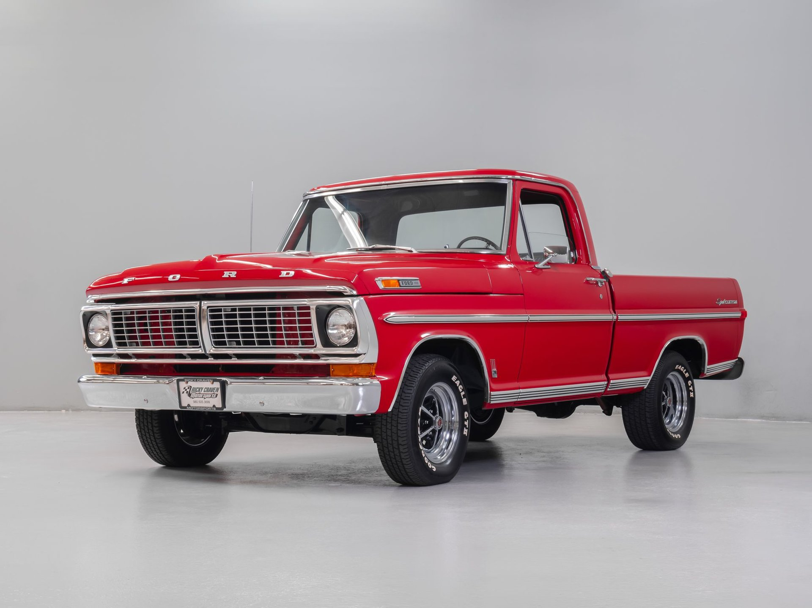
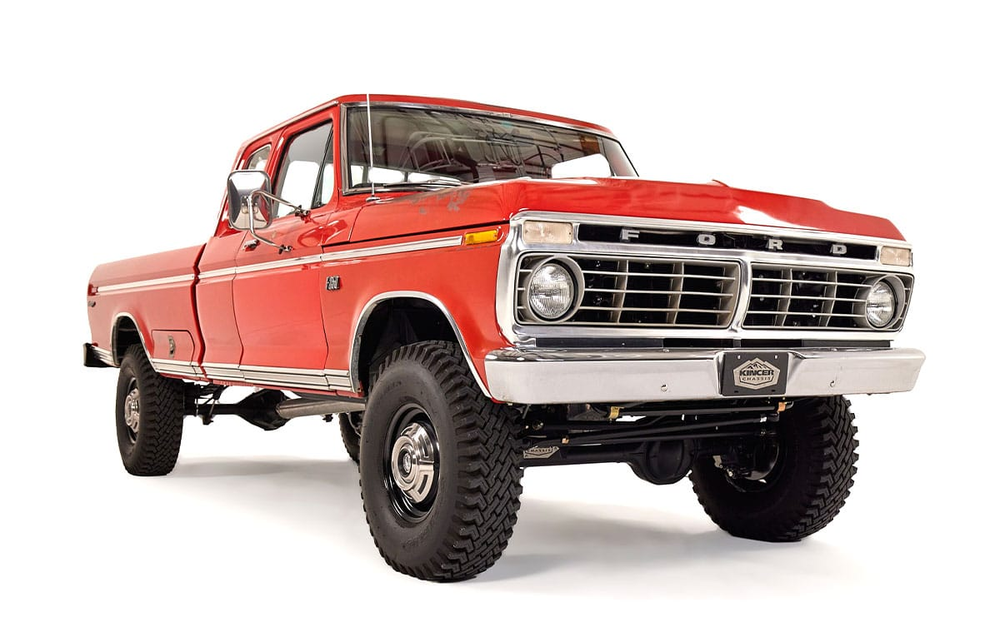
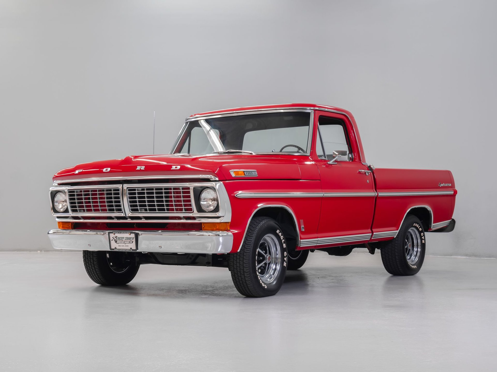
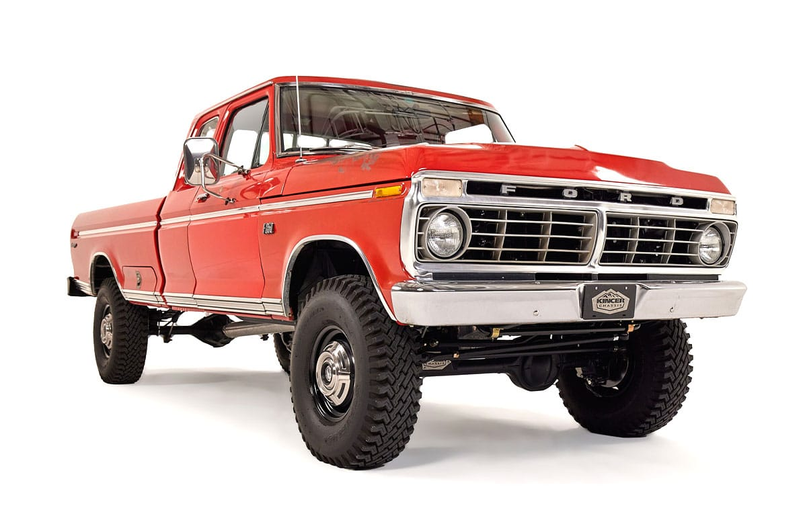

Bienvenido a la historia de las camionetas Ford
Descubre cómo la potencia, el diseño y la innovación marcaron una época dorada del automovilismo estadounidense.
 
Descubre cómo la potencia, el diseño y la innovación marcaron una época dorada del automovilismo estadounidense.
 